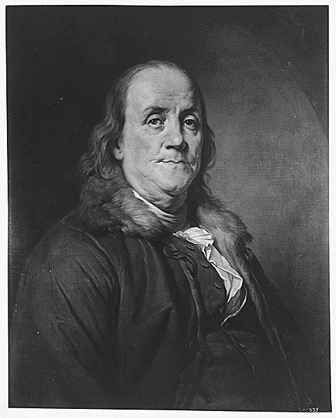

The Architects of Liberty
The Founding Freethinkers

Thomas Paine, The Idealist
No single person did more to make America possible than Thomas Paine. His pamphlet Common Sense transformed a colonial grievance into a revolutionary conviction. While the other founders were still hedging their bets, playing politics, calculating personal interest, still trying to negotiate with the mother country, Paine wrote words so clear and so morally undeniable that he forced their hand. He made independence inevitable.
"These are the times that try men's souls."
Then came The Crisis, written when Washington's army was starving and on the verge of collapse. Paine didn't write to the generals. He wrote to the soldiers. To the desperate. And those words held the Revolution together when everything else was failing.
Unlike every other name on this page, Paine requires no asterisk. He never owned slaves. He saw from the very beginning that all men being created equal meant exactly that. All men. He was right about independence, right about equality, right about reason, right about religion. He was right about everything. And they buried him for it.
"My own mind is my own church."

Thomas Jefferson, The Architect
Jefferson's contributions to the founding of this nation are undeniable. His words in the Declaration of Independence, that all men are created equal, endowed with certain unalienable rights, remain among the most powerful ever written about human liberty. His deism, his Jefferson Bible, his lifelong commitment to the separation of church and state: these place him firmly in the Enlightenment tradition.
"Question with boldness even the existence of God; because, if there be one, he must more approve of the homage of reason, than that of blindfolded fear."
But Jefferson's legacy in the Age of Reason is tarnished. Not by his religious views, but by his moral failure on the most fundamental question of his era.
A Note on Jefferson's Moral Failure
Jefferson enslaved over 600 human beings in his lifetime. He fathered children with Sally Hemings, an enslaved woman who could not consent. He wrote "all men are created equal" while building his wealth and comfort on the suffering of people he refused to free. Thomas Paine, the man Jefferson called a friend, saw clearly that slavery was wrong from the very beginning. Jefferson had access to the same moral clarity. He chose not to use it. We honor Jefferson's contributions to Enlightenment philosophy while refusing to excuse or minimize this fundamental hypocrisy.
"I have sworn upon the altar of God eternal hostility against every form of tyranny over the mind of man."

Benjamin Franklin, The Pragmatist
Franklin never joined a church. He believed in a Creator discovered through observation, experiment, and reason. Not through faith or scripture. It was Franklin who recognized Thomas Paine's genius in London and gave him the letters of introduction that brought him to America. Without Franklin, there is no Paine in America. Without Paine, the Revolution may never have caught fire.
"The way to see by faith is to shut the eye of reason."
It is worth noting that Franklin, unlike Jefferson and Washington, did ultimately act on his moral convictions regarding slavery — he became president of the Pennsylvania Abolition Society in his final years and petitioned Congress to end slavery. He moved slowly, but he moved.
"Lighthouses are more useful than churches."

James Madison, The Architect of Separation
Madison was the primary author of the Constitution and the Bill of Rights. The First Amendment was his deliberate gift to future generations. He had watched religious institutions in Virginia persecute dissenters and was determined that no such tyranny would take root in the new republic.
"The purpose of separation of church and state is to keep forever from these shores the ceaseless strife that has soaked the soil of Europe in blood for centuries."
The wall Madison built was not anti-religious. It was pro-liberty. It was the institutional expression of everything Paine had argued. Madison also enslaved hundreds of people and, like Jefferson, failed to apply his own principles to the most urgent moral question of his time.